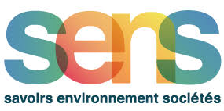
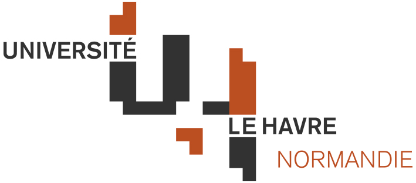

L’art d’être en Commun
accompagner pour mieux explorer
Par Etienne Delay
Le jeudi 2 avril 2026 - Cirad Lavalette
 |
 |
La carte de la traversée
 |
 |
 |
Le "contrat de lecture"
- Ce que je montres : Du terrain à la démocratie : une trajectoire de pratiques où la modélisation d’accompagnement déplace la science vers le monde.
- Ce que je ne fais pas : Pas de “Science” en surplomb : seulement des pratiques situées, sans prophétie ni neutralité confortable — accompagner, composer, assumer les obligations.
- Où je veux en venir : modèle-objet au modèle-relation : déplacer l’attention vers nos obligations, rendre prise aux collectifs, et tendre un fil d’émancipation pour des mondes habitables.
Le prélude : L'atterrissage et la friction


Friction, c’est une société qui accélère tout... sauf la capacité à assumer ce qu’elle met en mouvement. Une puissance qui dépasse notre capacité d’assumer. L'atterrissage invente des prises concrètes, collectives, pour habiter ce monde au lieu de le subir.
Percevoire la friction


La friction est partout — mais c’est l’exil des repères qui la rend enfin visible. Percevoir la friction, c’est reprendre la main ; sinon, elle te pousse.
Scène 1 : Le cercle de l’égalité (L'Arène)


L’égalité (au sens de Rancière) n’est pas un horizon moral : c’est la condition d’entrée dans l’échange — sans elle, aucune parole ne circule, aucune action ne se transmet.
Et ce qui rend cette égalité opérante, c’est "l’espace du commun" d’Arendt : l’espace entre les Hommes, qui expose le monde à la discussion et, dans le même geste, nous relie autant qu’il nous sépare.
L'arbre a palabre : une égalité situé


- Le chercheur n’indique pas la route : il tient l’espace où chacun peut tracer la sienne. Le "maître ignorant" (Rancière 1987) ne guide pas : il exige l’attention et vérifie le mouvement.
- L'émancipation intellectuelle n'est possible que si l'élève se met lui-même à mobiliser ses capacités de réflexion
- L'arbre a palabre pose le contexte
Scène 2 : Le double déplacement du terrain


- Un terrain a décrire
- Un terrain suport de céation conceptuelle.
Ici, le local ne devient pas “global” : il devient connectable. Une connaissance individuelle se noue aux autres, et le collectif produit un savoir en réseau
Sur le terrain des concepts


- Rhizome (savoir local) : se tisse peu à peu en réseau, par connexions multiples et traductions situées.
- Racine-pivot (savoir académique) : stabilise, catégorise, hiérarchise et valide par méthodes/preuves.
- Connexion : le pivot cesse d’être “tronc” et devient nœud — une ressource parmi d’autres, activée via des interfaces (enquête partagée, aller-retour théorie↔terrain).
Scène 3 : Le décalage prométhéen


- Décalage prométhéen (Anders 1957) : le modèle rend visible l’écart entre puissance technique et capacité à percevoir les conséquences.
- Moment de révélation : à l’écran, les acteurs découvrent l’impact réel de leurs pratiques (ex. charrues vs bergers).
- De la sidération à l’émancipation (Rancière) : le choc déclenche une prise en charge intellectuelle — on se saisit du problème au lieu de le subir.
sert de pivot pour tenir ensemble trois problèmes qui traversent tout le travail : la vérité, l’émancipation et la responsabilité dans des démarches de modélisation d’accompagnement (ComMod)
grille de lecture de l’aliénation
- Décalage action / conséquences : on agit localement, mais les effets se produisent à distance (dans le temps, l’espace, les chaînes d’acteurs).
- Décalage savoir-pouvoir / jugement moral : Plus nos systèmes techniques sont puissants et complexes, plus on agit sans voir clairement les conséquences (souvent lointaines et diffuses), ce qui crée une forme d’aliénation et dilue la responsabilité.
- Diagnostic d’aliénation : cette distance explique pourquoi acteurs et institutions “ne font pas le lien” entre pratiques quotidiennes et déséquilibres observés (responsabilités diluées, action collective freinée).
Un outil pour “objectiver” l’émancipation… sans la prescrire
- Pas de posture “surplomb” : le modèle/la science n’impose pas “le vrai” ni “le bien”, il soutient la discussion.
- Objectiver l’émancipation : utiliser le décalage prométhéen pour observer si le collectif relie mieux actions → causes → effets → responsabilités au fil du processus.
- Sans prescrire une destination : on évalue le chemin parcouru (capacités, prise de recul, pouvoir d’agir) sans fixer à l’avance la “bonne” solution, pour éviter une nouvelle domination.
Une "boussole" pour la pratique ComMod et le "faire commun"
- Boussole (“navigation négative”) : s’accorder d’abord sur où on en est et ce qu’on veut éviter, avant de prétendre savoir la solution.
- Rendre visibles les chaînes d’effets : le processus aide le collectif à relier décisions, actions et conséquences pour réduire le décalage.
- Reconstruction du “monde commun” : par l’enquête partagée et l’action collective, on renforce le jugement et le pouvoir d’agir ensemble.
Scène 4 : L'exploration et l'imagination

L'imagination radicale

La pêche alterne avec une période de fermeture, mais l’ouverture de saison concentre jusqu’à 500 pirogues sur le lac, renforçant la compétition et limitant les revenus. Pour stabiliser l’économie locale, les pêcheurs développent la pisciculture (surtout en bassins terrestres), intégrée aux nouvelles parcelles agricoles du plan « Sénégal 2050 » et gérée collectivement par le GIE des pêcheurs.
Scène 5 : La maturité du Commun

l'objet initial (la ressource « poisson » ou « arbre ») s'est transformé. On n'est plus seulement dans la gestion d'un stock, mais dans la construction d'un Territoire en tant que Commun. Le collectif s'est autonomisé ; il ne demande plus une ordonnance au scientifique, mais prend en charge sa propre trajectoire. L'émancipation est en marche : le passage de la « ressource » au « faire commun » mature a accru les capabilities (capacités d'action) de chacun
Scène 6 : Vivre bien dans un monde mauvais


Epilogue

Le chercheur repart, redevenant ce chercheur nomade qui laisse une trace. Il ne reste pas pour diriger, mais pour que le projectile qu'il a lancé suive sa propre trajectoire balistique. Il laisse derrière lui des « faitiches » (modèles co-construits) qui appartiennent désormais aux habitants, fiers d'avoir tiré le monde à eux sans le réduire
End